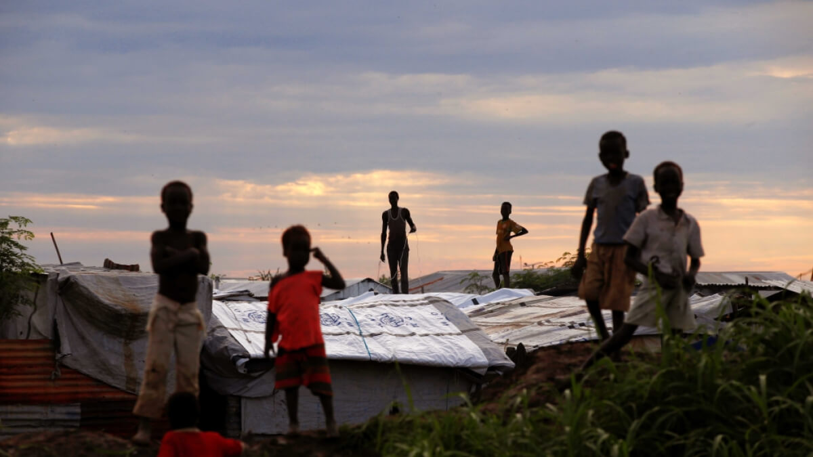

La desigualdad es la patria de muchos niños y niñas en Colombia. En esas condiciones, el riesgo de ser utilizados por grupos armados aumenta.
“Mi mamá y mi papá fueron guerrilleros”, cuenta un adolescente de 17 años, nacido en Arauca, a quien llamaremos Pablo. “Mi mamá se encargó de decirme cómo son las cosas. Ella vivió allá desde los 16 años y me enseñó que es mejor aguantarse las jueteras de la familia de uno, que irse para el monte, porque la inseguridad que se siente es tenaz, el miedo, dormir bajo la lluvia… eso no es una opción de vida”.
Pablo lleva algunos meses viviendo en Bogotá. Está lejos de su abuelo, quien lo crio, pero también del peligro de ser reclutado por un grupo armado. Su historia es similar a la de Viviana*, de 14 años, y William*, de 15, pero ellos llegaron de Norte de Santander y ya llevan más de un año en la capital. Los tres son parte de esa suma indeterminada de niños a los que el reclutamiento les pasó por el lado, dejándolos aterrados y en la mira de la siguiente batida de los grupos ilegales.

La desesperanza juega un rol importante en la vida de los niños, niñas y adolescentes colombianos que terminan reclutados por los grupos armados. Crédito: fulanito/Reuters.
“De la familia uno extraña todo”, suspira Pablo, “pero, allá yo tengo amigos a los que las guerrillas les llegan a sus casas, los buscan y les ofrecen plata a las familias para que los dejen ir. Se los terminan llevando, a la fuerza o porque en la casa los entregan”. El 2 de enero pasado, sacaron a más de 50 personas de sus casas en veredas de Arauca. Muchas de ellas resultaron asesinadas en parajes cercanos. Ese día, Juan Carlos Villate, personero de Tame, llamó a todas las Juntas de Acción Comunal (JAC) para pedirles que evacuaran lo antes posible a los niños y adolescentes del territorio.
“Los reportes de reclutamiento crecen a medida que el conflicto se recrudece”, cuenta el personero. “Y muchas mamitas quieren sacar a los hijos,” agrega. El día que fue consultado por Cambio, Villate estaba extrayendo, con ayuda de una organización internacional, a un adolescente de la edad de Pablo que había sido reclutado por el ELN y logró escaparse. Tuvo la suerte de que no había cumplido 18 años, porque en ese momento ya no podía ser considerado por la ley como víctima de reclutamiento, sino como un rebelde más.
 Artículo
Artículo